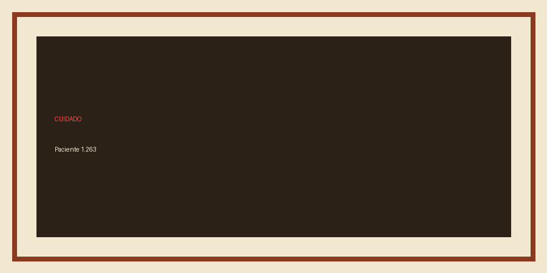

Este documento testa estrutura tagged, link externo, tabela com cabeçalho e nota de rodapé.1
| Cor | Hexadecimal | Contraste |
|---|---|---|
| Memória | #8A3B1F | 6,32:1 |
| Documento | #1F5C57 | 6,31:1 |
| Cuidado | #FF4D4D | 6,42:1 sobre preto |

1 Nota de rodapé: a acessibilidade exige estrutura, não apenas texto extraível.